-
01/04/2026
A few months ago, I picked up a used fridge for my basement. While cleaning it, I became intrigued with one of the stickers on the fridge door. Upon looking it up, I found out that the sticker originated from a coffee house in Key West and decided to keep it. Fast forward to January 4th 2026, my wife and I were driving to Key West, and I had long forgotten about the sticker. About 10 minutes before arriving in Key West, I see a building from the corner of my eye that catches my attention, and it suddenlty hits me: It's the same coffee house. I immediately turned around and picked up a new sticker for the fridge.
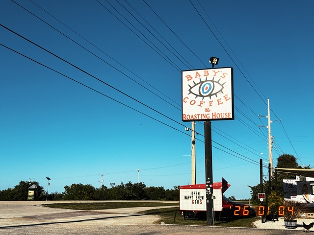 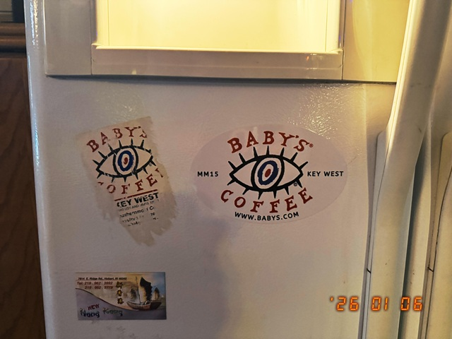
-
12/30/2025
Today we visit the Everglades, not on a boat tour, but driving through the actual state park. Along the road are several stops with trails where tourists can walk on secured pathways and observe alligators. Here are two alligators in the wild.
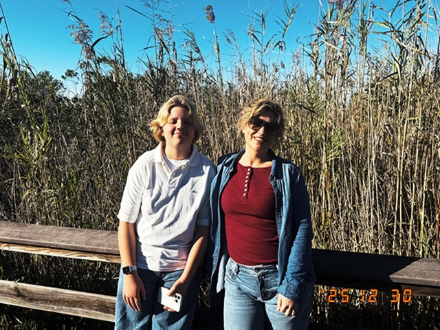
-
12/29/2025
While on vacation, it is important to visit at least one laundromat. It offers a pause from an otherwise hectic schedule, and allows to plan for future activities. This laundromat was used in a scene of the movie Stiptease starring Demi Moore.
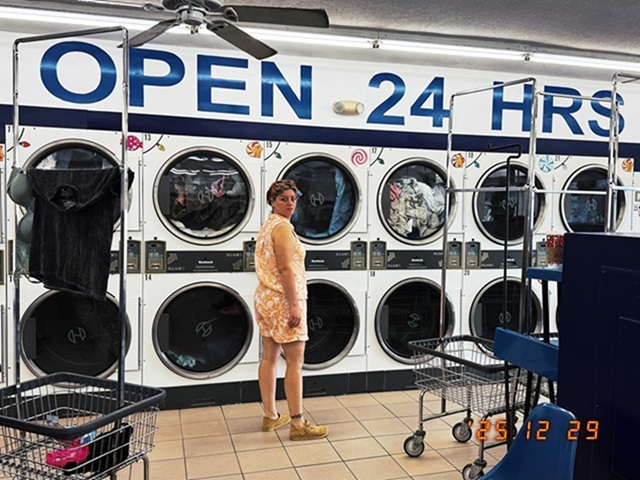
-
12/27/2025
Second day at Universal, the highlight of the day was the E.T. ride that has been opened since 1990 and has remained unchanged since. We had lunch at the Simpson's Krusty Burger.
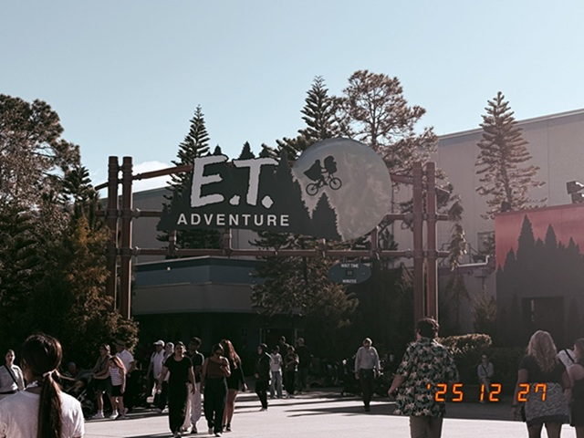
-
12/26/2025
First day in Florida, today we go to Universal Studios and walk around my favorite part of the park: Jurassic Park. The visitor center is by far the coolest building in the park. We had lunch at Thunder Falls Terrace, which is a Jurassic Park themed restaurant. Later, I had a burger at Dino Digs.
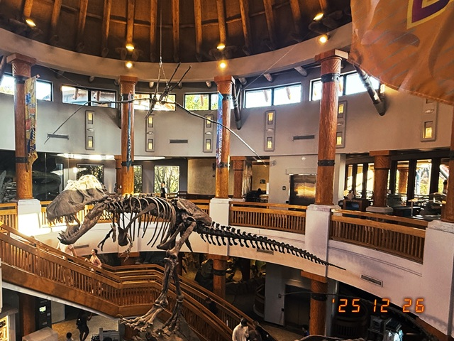
-
12/25/2025
Just landed in Orlando, Florida. We decided to have Christmas dinner at McDonald's. However, this particular location is not your typical McDonald's. It is the largest Mcdonald's in the world. It is a 24-hour location that also serves Pizza in addition to regular food. Merry Christmas.
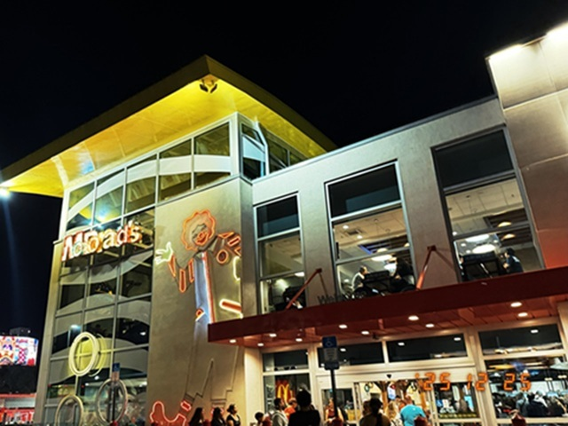 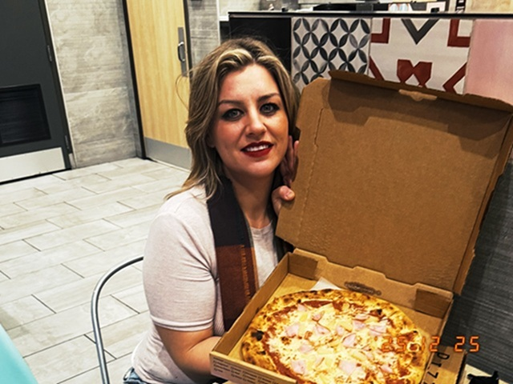
-
12/21/2025
We were forced to celebrate Christmas four days early since we're flying to Florida on Christmas day. Strangely enough, the kids didn't seem to mind. The whole event was videotaped on my camcorder as is tradition.
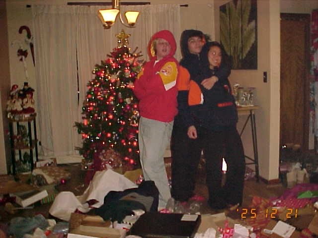 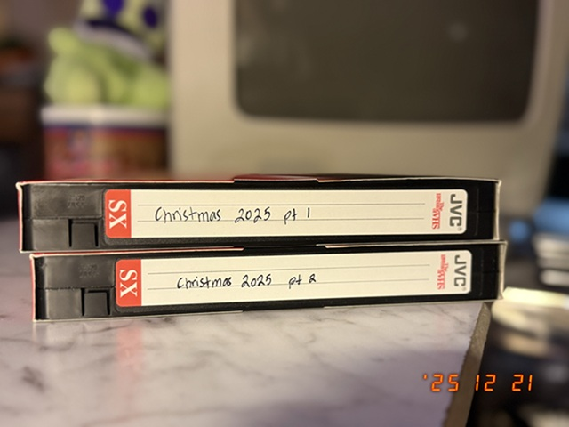
-
12/19/2025
Picked up ten Disney tapes, all sealed. I put them away in the VHS cabinet, then I hung my new Shania Twain poster.
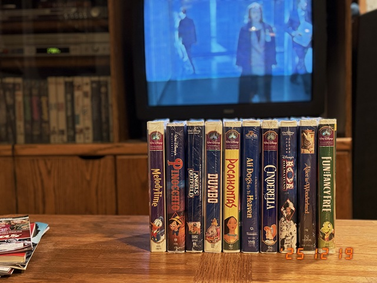 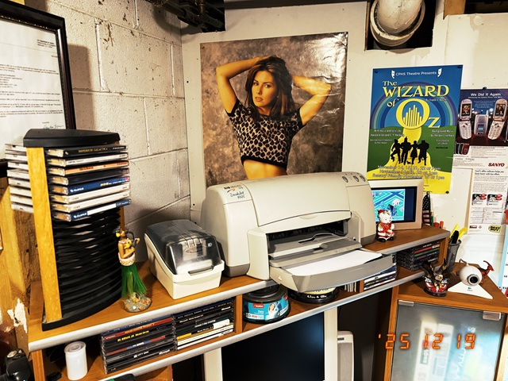
-
12/18/2025
Today is my birthday. My wife and I went Christmas shopping, and I picked up this Gateway computer monitor as well as this America Online book, and a couple of new tapes.
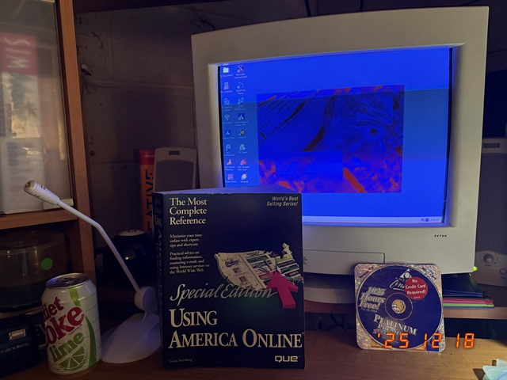 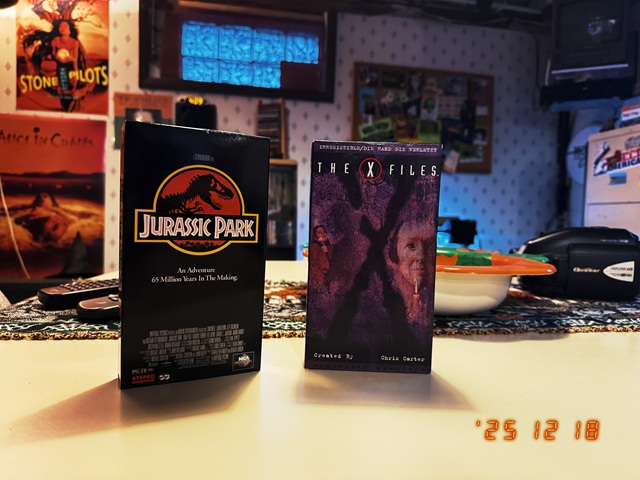
-
12/15/2025
The now long abandoned Sears department store still lights up at night. Sears didn't only anchor the mall, it anchored our hearts.
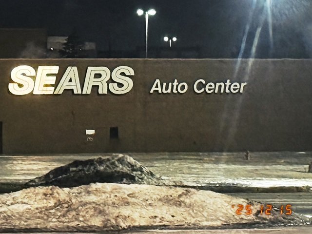
-
12/13/2025
Today, I drove two and a half hours to go pick up this VHS cabinet. My son Vincent went with me, so we explored the area and stopped at Kroger for groceries.
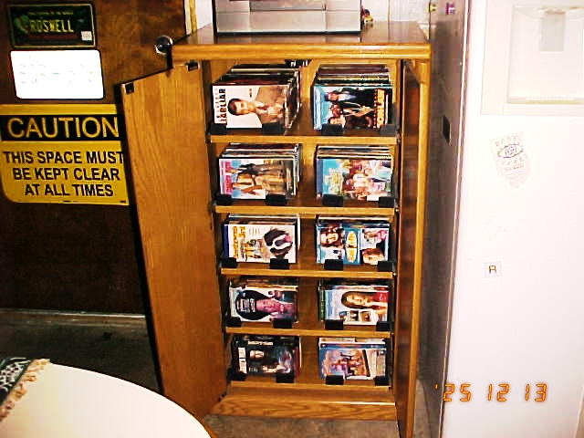 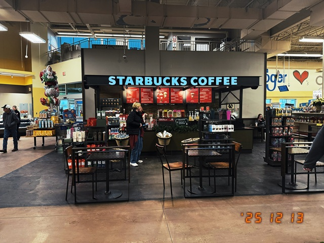
-
12/12/2025
Played Gamecube with my son Preston today. The game pictured below is Polar Express, appropriate for this time of year.
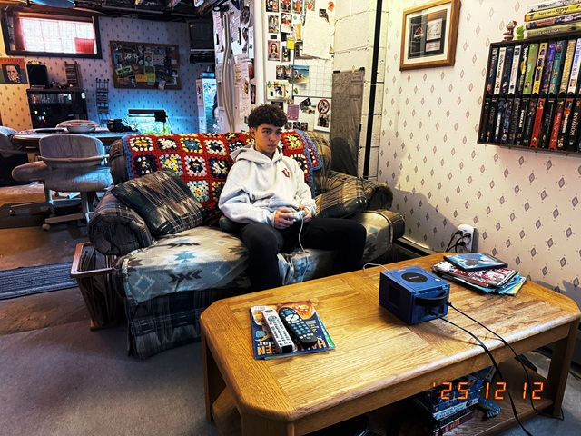 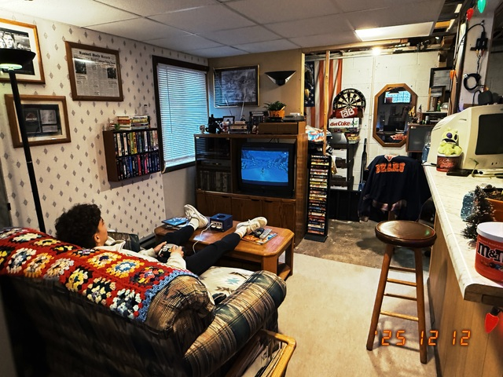
-
12/10/2025
I've decided it's never too late to start learning about computers, so my assignment today is to watch the Microsoft Windows 95 Video Guide. Learning from Chandler and Rachel is probably easier than learning from Bill Gates himself, and this will help me stay in touch with new technologies.
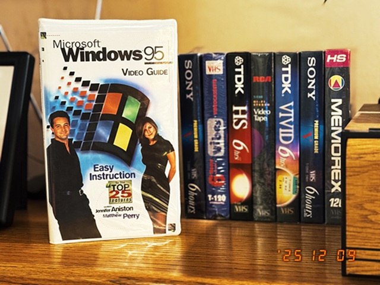
-
12/09/2025
My Sim game collection.
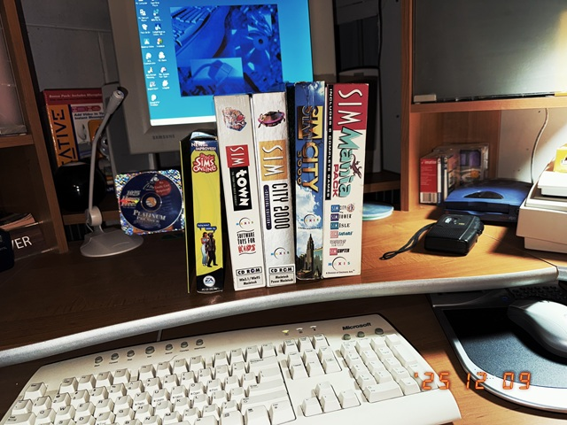
-
12/09/2025
My collection of Stussy hats. Pictured here are 3 Stussy Electric Dot SnapBack hats with contrast stitching. The black one was famously featured on "The Secret World of Alex Mack", a Nickelodeon TV Show created in 1994 about a girl who develops super powers after getting hit by a truck full of GC-161 chemical.
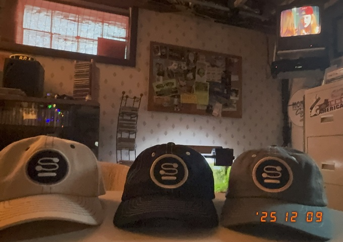
-
12/08/2025
Installed new kitchen cabinets today. The off white formica / woodgrain combo makes for a nice addition to my office.


-
12/07/2025
My son Preston and I woke up early today to go pick up our Christmas tree from a nearby farm.
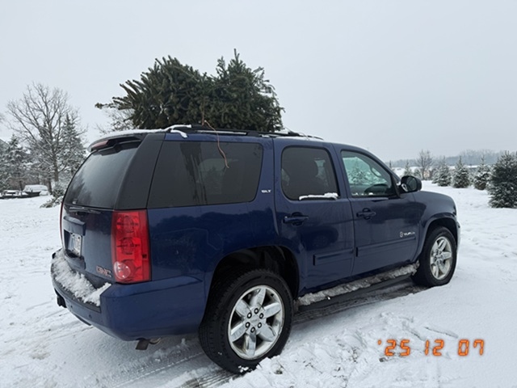
-
12/05/2025
My wife and I attended our son's Christmas choir concert last night, then we ordered Pizza from Gelsosomo's. A perfect night.

-
12/04/2025
Bought some Diet Coke with Lime today.

-
12/01/2025
First day of December, it is cold here in Chicago. Today also happens to be Cyber Monday which is why I have decided to update this page.
-
08/11/2025
I have a sciatica from hell, an AI certification scheduled for tomorrow, a self-assesment I need to complete by the 15th, and a ton of administrative tasks I have not yet started. Where is Bill Gates when you need him?
-
06/07/2025
I came home today and handed my wife a gift thinking it was our anniversary. That was awkward since our anniversary was actually 4 days ago.
-
06/06/2025
Today is national donut day, the one day out of the year where we put our differences aside for the good of the nation. My son Preston surprised me with a Boston Cream donut from Dunkin' Donuts.
-
06/05/2025
Went into the office today, Chicago traffic is the worst.
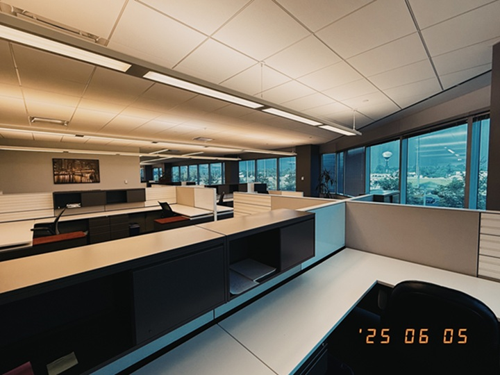
-
06/04/2025
Not feeling good today, this weather is depressing. Coincendently, the office coffee pot needs cleaning.
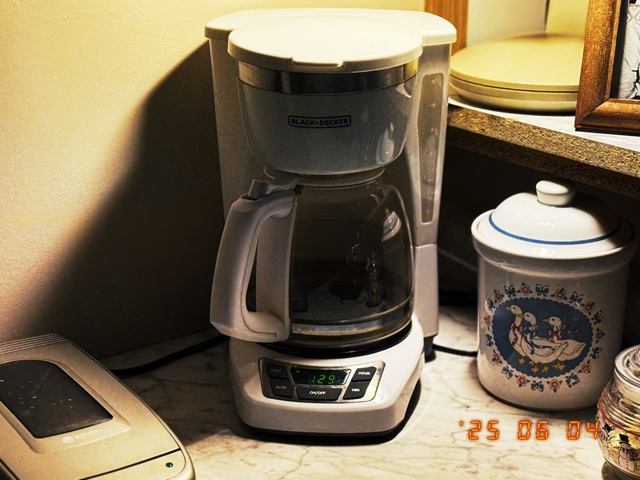
-
06/02/2025
Today was Vinny's last day of middle school which made me realize how quickly time passes. That's why I've decided to dedicate this blog to my kids, Preston and Vincent, where I will keep track of major life events. So back off Zuckerberg, this site is not for sale.
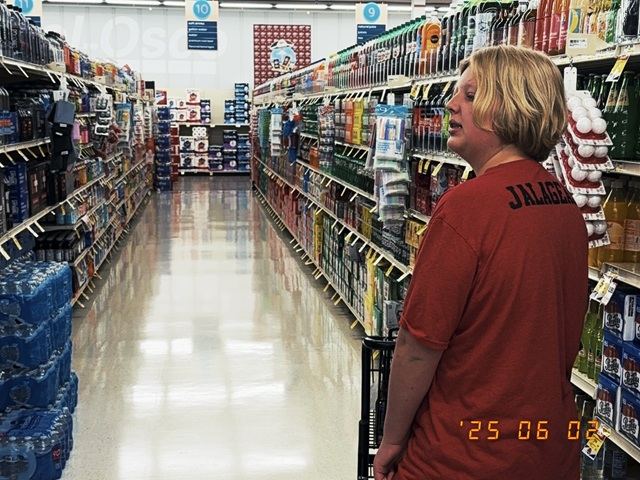
-
05/28/2025
Went to Chuck E. Cheese with my neice and nephew.
-
05/21/2025
My sister arrived today, O'Hare was a madhouse. The new office wallpaper will have to wait.
-
05/15/2025
Welcome to my blog, also known as the official webpage of my home office. You can check the progress in the gallery